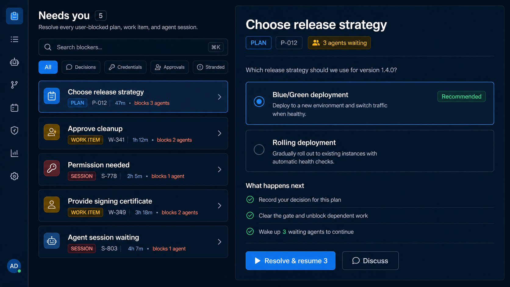

Resolution Inbox
A calm master-detail queue: see the full blocker set, then resolve the selected case without losing context.

Best at
- Balancing queue visibility with fast resolution
- Explaining impact before an irreversible answer
- Becoming the canonical deep-link destination
Tradeoff: needs a robust resolver contract before every source feels equally actionable.